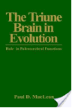
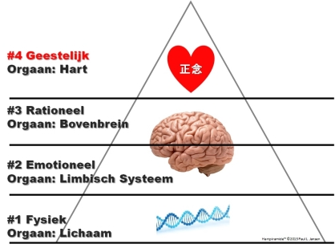
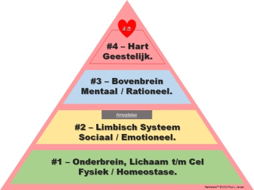
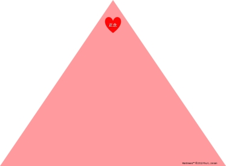

“Verander dingen nooit door de bestaande
realiteit te bestrijden … Om iets te veranderen, bouw een
nieuw model dat het bestaande model overbodig
maakt.” ~R.
Buckminster Fuller
Het simpele nieuwe Hartmens™ model (zie
hierna) bestaat uit vier niveaus. Het hoogste (niveau 4) is dat van
het hart en dat is bij zowel elk mens als bij ieder ander dier
aanwezig, ook dieren en/of mensen die niet (meer) over andere
niveaus kunnen beschikken. Elk volgende/hogere niveau vanaf 2 kan
van grote invloed zijn op alle niveaus
daaronder.
Het Hartmens™ model is ook een neurologisch
beter kloppend schema dan uitgebreide breinschema's, en toch
simpel, beter gepositioneerd op (alle) vier niveaus en op het
overzicht van onderling hiërarchische
relaties.
Het Hartmens™ model volgt ook de
evolutionaire opdeling van de hersenen in drie 'stappen' zoals arts
en Neurowetenschapper Paul D. MacLean in de zestiger jaren van de
vorige eeuw propageerde.

Zijn model (Triune Brain) is breed bekend geworden mede dankzij Carl
Sagan. MacLean is ook de persoon die de naam 'Limbisch Systeem' gaf
aan dat deel van de hersenen dat o.a. emoties regelt en in het
algemeen nog steeds als 'Limbisch Systeem' aanduid
wordt.
Het Hartmens™ model wordt ingevuld met de
juiste informatie over de fysieke plaatsen en biologische
onderdelen waarmee de vier lagen in het model zijn verbonden. Dat
is belangrijk omdat er door veel neurologen op dit moment alleen
nog maar over 'het brein' of 'de hersenen' gesproken wordt, terwijl
er veel meer neuroverwante biologische plekken zijn die het hele
plaatje inderdaad pas écht compleet maken. Verreweg de meeste
neurologen en zeker de ‘hersenkundigen’ beginnen (pas)
letterlijk in het hoofd van de mens. Daarmee worden enkele cruciale
en belangwekkende onderdelen van 'het hele plaatje' gemist.
Uiteraard weten we hoe belangrijk de hersenstam en het ruggenmerg
zijn in het neurolandschap. Maar het hele lichaam zélf speelt
ook een belangrijke rol, zowel in de dynamiek van het geheugen als
in het ervaren van stress. Ieder van ons heeft ervaringen daarmee.
Inmiddels stapelt ook het wetenschappelijk bewijs zich op dat
cellen, in combinatie met zeer bepaalde eiwitten, een grotere rol
spelen dan wordt gedacht in het reguleren van cel vernieuwing,
inclusief aanpassingen in het DNA.
Dus niveau 1 is de fysieke mens en omvat in het Hartmens™ model
cellen, organen, het lichaam en uiteraard ruggenmerg en hersenstam
plus cerebellum (de onderkant van onze
hersenen).
Op de niveau 2, de emotionele mens, benoemt het Hartmens™ model het Limbisch
Systeem en sluit daarmee aan op de breed gehanteerde ‘Triune
Brain’ indeling van 'het brein'.
Op niveau 3 is de rationele mens; het Bovenbrein.
Niveau 4, de spirituele mens, is waar de enorme kloof tussen de bestaande
mainstream neurowetenschappers en de groeiende groep van hart-brein
wetenschappers zich (onder)scheiden.

Het Hartmens™ model ruimt juist een grote
en zeer belangrijke positie in voor het hart. Niet omdat daar
dingen vandaan komen die in het hart 'zitten', maar omdat het hart
het medium, letterlijk: het orgaan, het middel blijkt te zijn om in contact te komen met zaken
waartoe het programmerende brein niet in staat is. Het hart is
het intermedium tussen het biologische, fysieke wezen mens en de
'onstoffelijke mens', de geest, de ziel: het hart legt verband met
het conceptueel 'onweetbare (on)bekende'.
Uit deze indeling is de volgende piramide
ontstaan:

De grenzen tussen de niveaus liggen absoluut niet
zo strak. Dagelijks ontdekken we nieuwe en soms
grensoverschrijdende zaken. Als overzicht van niveaus in grote
lijnen voldoet het Hartmens™ model echter
prima.
N.B. De Amygdalae zijn de amandelvormige kernen
van neuronen die diep in de temporale kwab onderdeel uitmaken van
het Limbisch Systeem en verantwoordelijk zijn voor vijf typische
gedragingen (de FFFFF- of VVBFO- reflexen: vechten, vluchten,
bevriezen, flauwvallen, overspronggedrag) waarvan vechten en
vluchten de twee bekendste zijn.
N.B.B. Vanuit de neurologie wordt er ook wel met
een hersenmodel van vier lagen gewerkt. Dat is een uitbreiding van
het oorspronkelijke Triune Brain naar het zogenoemde Quadrune Brain
waarbij het bovenbrein is opgedeeld in twee afzonderlijke delen en
een aparte rol is weggelegd voor het frontale deel van de hersenen.
Er zijn zelfs hersenmodellen die vooral in het frontale deel van de
hersenen vermogens positioneren die (in het Hartmens™ model)
tot het hart behoren. De nuance is dat delen van de hersenen
wel instrumenten;
gereedschappen zijn
voor Hartzaken, zoals o.a. bij empathie is aan te
geven.
Niveau 0 Fundament

Als verbindingsorgaan tussen de mens en zijn
essentie (geest) is de fysieke basis voor de 'hele mens' het hart.
Vanuit die basis kunnen de niveaus 1 t/m 3 als perfect gereedschap
dienen op de terreinen waarin deze niveaus expert zijn. Het hart is
de aarde waarin de volgende niveaus geworteld moeten zijn om een
bewuste mens te laten zijn.